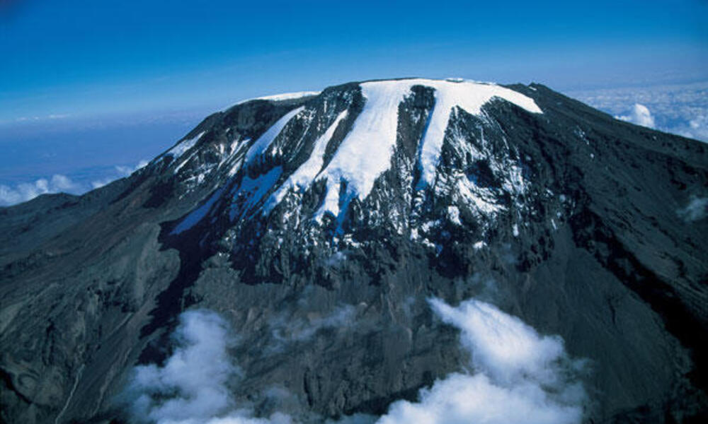
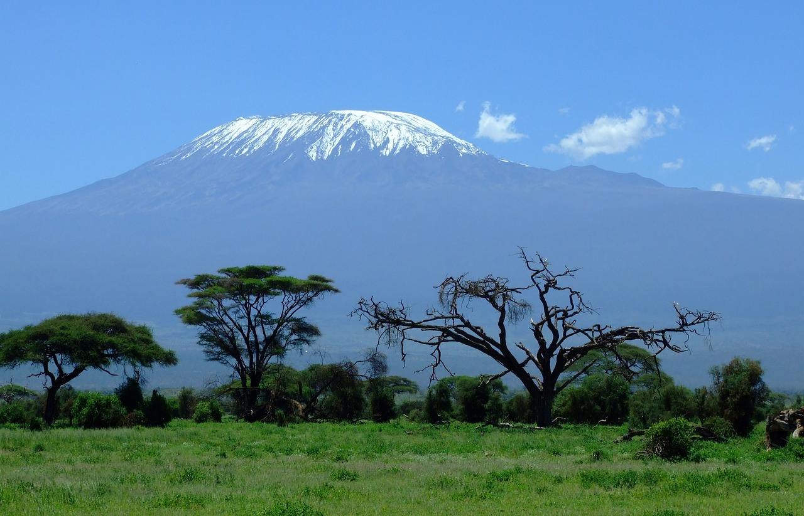
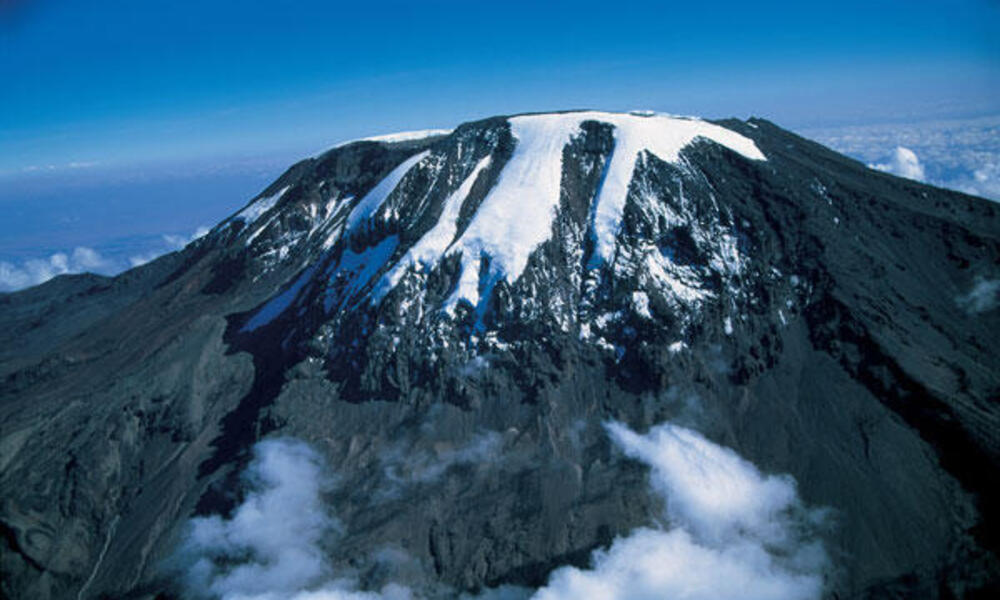
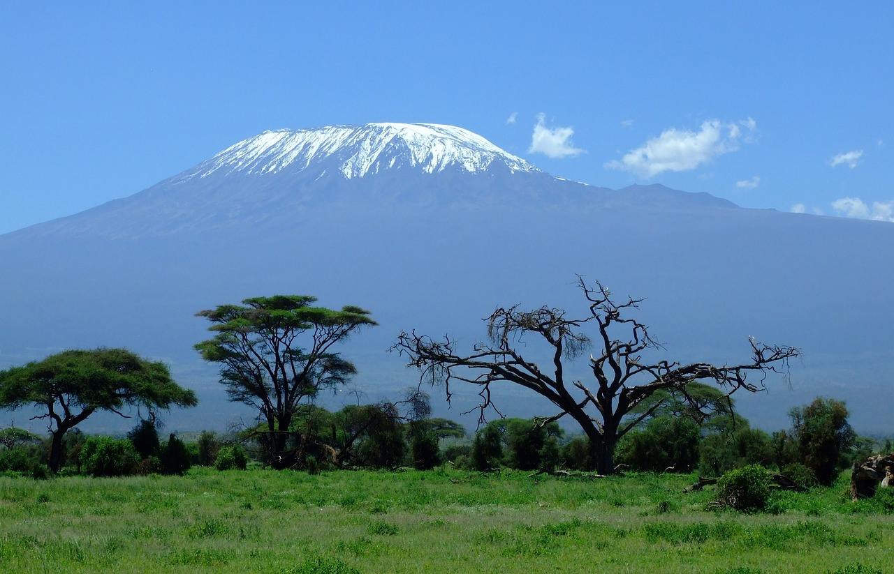

Fun Facts About Africa
Welcome to our page of fascinating facts about Africa! We're excited to share with you some amazing information about this incredible continent that you may not have known before. Africa is a place of diverse landscapes, cultures, and people, and we hope to give you a glimpse of just how rich and complex it truly is.
Africa's Sahara Desert is bigger than the USA
The Sahara desert is the largest desert in the world and spans 9.4 million squares kilometers, which is bigger than the entire USA.
Size and Location
It spans around 9.4 million squares kilometers. It spans across 11 countries, including Algeria, Chad, Egypt, Libya, Mali, Mauritania, Morocco, Niger, Sudan, Tunisia, and Western Sahara.
Climate
The climate in the Sahara desert is extremely hot and dry, with temperatures often exceeding 100°F (38°C) during the day and dropping below freezing at night. Rainfall is rare with some parts of the desert receiving no rainfall for years at a time.
Wildlife
Despite the harsh climate, the Sahara is home to a variety of wildlife, including the Saharan cheetah, dromedary camels, and the fennec fox. The desert also supports a diverse range of insects, reptiles, and birds that have adapted to its extreme conditions.
Africa is the hottest continent in the world
Mount Kilimanjaro is Africa's tallest peak
Mount Kilimanjaro, located in Tanzania, is Africa's highest peak at 5,895 meters above sea level. The mountain is a snow-capped volcano and a popular destination for climbers worldwide. It is one of the biggest challenges for professional climbers today due to its steep ascent and high altitude. Despite the difficulty, the climb is known for its stunning views and unique flora and funa found nowhere else in the world.
 



The richest man ever is African
Mansa Musa, also known as Musa I of Mali, is widely regarded as one of the richest person in history and he was the tenth emperor of the Mali Empire.
- When he died in 1337, it's estimated that his net worth ranged from $300 billion to $400 billion USD.
- With an accumulation of wealth that's been described as "unimaginable" Mansa Musa's ricjes make him the richest person ever, surpassing all other billionaires in history
Africa is the most multilingual continent in the world
Nigeria has the highest number of twins born in the world
Nigeria is a large African country that has gained a reputation as "The Land of Twins," thanks to its unusually high rate of twin births. According to the BBC, West Africa has four times more twin births than any other region in the world, and the town of Igbo-Ora in Nigeria is particularly well-known for its high number of twins. Recent statistics suggest that around 50 sets of twins are born for every 1,000 births in this town, making it a fascinating place to study the phenomenon of twin births.